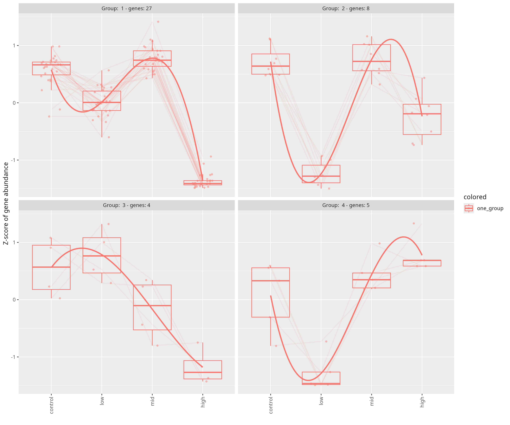

if ("Biostrings" %in% rownames(installed.packages()) == 'FALSE') install.packages('Biostrings')
if ("tidyverse" %in% rownames(installed.packages()) == 'FALSE') install.packages('tidyverse')
if ("goseq" %in% rownames(installed.packages()) == 'FALSE') install.packages('goseq')
install.packages("GOplot")
remotes::install_github("mdscheuerell/flexoki")Gene ontology (GO) term analysis
Now that we’ve identified the DEGs, what do they do?
Background
We identified 44 genes that were broadly impacted by leachate across all stages (meaning transcript abundance of those genes were significantly different in at least one dose of leachate compared to the control in at least one stage). Here we want to know what those genes do!
We do this using the R package goseq. Why is goseq different from other enrichment tools? Typical enrichment methods (like Fisher’s exact test or hypergeometric tests) assume that every gene has an equal probability of being selected as a DEG. But in RNA-Seq longer genes are more likely to be detected as DEGs just because they accumulate more reads. goseq corrects for this bias.
Inputs
LRT_significant_genes_combined_wald.csvA dataframe of the 44 genes and their LRT and Wald test statisticsfunctional annotation: http://cyanophora.rutgers.edu/montipora/Montipora_capitata_HIv3.genes.EggNog_results.txt.gz (EggNog)
functional annotation http://cyanophora.rutgers.edu/montipora/Montipora_capitata_HIv3.genes.KEGG_results.txt.gz (KEGG)
output/06_deg/interactions/clusters.csvA dataframe mapping our 44 significant leachate interaction genes to 4 main gene expression response patterns…. The genes cluster into these 4 patterns:
Outputs
Setup
Install packages
if (!require("BiocManager", quietly = TRUE))
install.packages("BiocManager")
BiocManager::install("GenomicRanges")
BiocManager::install("goseq")
BiocManager::install("GO.db")
BiocManager::install("rrvgo")
BiocManager::install("org.Ce.eg.db") # c.elegens genome-wide annotation
BiocManager::install("AnnotationForge")
BiocManager::install("GOSemSim")Load packages
library(GenomicRanges)
library(Biostrings)
library(goseq)
library(rrvgo)
library(org.Ce.eg.db)
library(GO.db)
library(GOplot)
library(AnnotationForge)
library(GOSemSim)
library(tidyverse)
library(flexoki)
library(plotly)Load inputs
Read in gene lists and counts
# interaction
all_genes <- read.csv("../../output/06_deg/interactions/all_genes.csv")
sig_genes <- read.csv("../../output/06_deg/interactions/sig_genes.csv")
sig_counts <- read.csv("../../output/06_deg/interactions/sig_counts.csv", row.names="gene_id", check.names = FALSE)
# contrasts
sig_lvc_cl <- read_csv("../../output/06_deg/contrasts/sig_lvc_cl.csv")
sig_mvc_cl <- read_csv("../../output/06_deg/contrasts/sig_mvc_cl.csv")
sig_hvc_cl <- read_csv("../../output/06_deg/contrasts/sig_hvc_cl.csv")
sig_hvc_eg <- read_csv("../../output/06_deg/contrasts/sig_hvc_eg.csv")Read in pattern clusters
int_deg_patterns <- read.csv("../../output/06_deg/interactions/clusters.csv")Import fasta
# Load your transcriptome
all_seqs <- readDNAStringSet("../../input/genome/Montipora_capitata_HIv3.assembly.fasta")
# Filter for the 44 significant interaction genes
sig_seqs <- all_seqs[names(all_seqs) %in% sig_genes]# Save to new FASTA file
writeXStringSet(sig_seqs, "../../output/08_go/significant_genes.fasta")Download annotation & enrichment files
Note
Only need to do this once!
cd ../../input/annotations
wget http://cyanophora.rutgers.edu/montipora/Montipora_capitata_HIv3.genes.EggNog_results.txt.gz
wget http://cyanophora.rutgers.edu/montipora/Montipora_capitata_HIv3.genes.KEGG_results.txt.gzUnzip
Note
Only need to do this once!
cd ../../input/annotations
gunzip *.gzImport EggNog to R environment
# Read in the file (it will include "#query" as a column name)
EggNog_anno <- read_tsv("../../input/annotations/Montipora_capitata_HIv3.genes.EggNog_results.txt")rename “#query” to gene_id
EggNog_anno <- EggNog_anno %>%
rename(gene_id="#query")
nrow(EggNog_anno)[1] 24072names(EggNog_anno) [1] "gene_id" "seed_ortholog" "evalue" "score"
[5] "eggNOG_OGs" "max_annot_lvl" "COG_category" "Description"
[9] "Preferred_name" "GOs" "EC" "KEGG_ko"
[13] "KEGG_Pathway" "KEGG_Module" "KEGG_Reaction" "KEGG_rclass"
[17] "BRITE" "KEGG_TC" "CAZy" "BiGG_Reaction"
[21] "PFAMs" This functional annotation has 24,072 genes. This is 44% of total protein predicted genes described in the publication associated with this annotation. https://academic.oup.com/gigascience/article/doi/10.1093/gigascience/giac098/6815755
Annotate significant genes
Match up genes in sig_genes dataframe to annotation dataframe
Note
An inner_join() only keeps observations from x that have a matching key in y. The most important property of an inner join is that unmatched rows in either input are not included in the result.
Interactions
sig_genes > sig_genes_anno > sig_genes_annofilt
# Annotate the interaction gene list
sig_genes_anno <- inner_join(sig_genes, EggNog_anno, by = "gene_id")
# Filter out any that lack GO term annotation
sig_genes_annofilt <- sig_genes_anno %>%
mutate(GOs = na_if(str_trim(GOs), "-")) %>% # treat "-" as missing and trim whitespace
filter(!is.na(GOs), GOs != "") # keep only rows that have GO terms (remove NA and blank)paste("Annotated interaction genes:",
nrow(sig_genes_anno), "/",
nrow(sig_genes), "=",
round(100*nrow(sig_genes_anno)/nrow(sig_genes),1),"%")[1] "Annotated interaction genes: 37 / 44 = 84.1 %"paste("GO annotated interaction genes:",
nrow(sig_genes_annofilt), "/",
nrow(sig_genes), "=",
round(100*nrow(sig_genes_annofilt)/nrow(sig_genes),1),"%")[1] "GO annotated interaction genes: 23 / 44 = 52.3 %"
Important
37 of the 44 (84.1%) significant interaction genes were in the
EggNog_annodataframe!23 of the 44 (52.3%) actually had GO terms
Contrasts
# Annotate the contrast gene lists
sig_lvc_cl_anno <- inner_join(sig_lvc_cl, EggNog_anno, by = "gene_id")
sig_mvc_cl_anno <- inner_join(sig_mvc_cl, EggNog_anno, by = "gene_id")
sig_hvc_cl_anno <- inner_join(sig_hvc_cl, EggNog_anno, by = "gene_id")
sig_hvc_eg_anno <- inner_join(sig_hvc_eg, EggNog_anno, by = "gene_id")
# Filter out any that lack GO term annotation
sig_lvc_cl_annofilt <- sig_lvc_cl_anno %>%
mutate(GOs = na_if(str_trim(GOs), "-")) %>% # treat "-" as missing and trim whitespace
filter(!is.na(GOs), GOs != "") # keep only rows that have GO terms (remove NA and blank)
sig_mvc_cl_annofilt <- sig_mvc_cl_anno %>%
mutate(GOs = na_if(str_trim(GOs), "-")) %>% # treat "-" as missing and trim whitespace
filter(!is.na(GOs), GOs != "") # keep only rows that have GO terms (remove NA and blank)
sig_hvc_cl_annofilt <- sig_hvc_cl_anno %>%
mutate(GOs = na_if(str_trim(GOs), "-")) %>% # treat "-" as missing and trim whitespace
filter(!is.na(GOs), GOs != "") # keep only rows that have GO terms (remove NA and blank)
sig_hvc_eg_annofilt <- sig_hvc_eg_anno %>%
mutate(GOs = na_if(str_trim(GOs), "-")) %>% # treat "-" as missing and trim whitespace
filter(!is.na(GOs), GOs != "") # keep only rows that have GO terms (remove NA and blank)# Low vs control (cleavage)
paste("Annotated low vs control cleavage:",
nrow(sig_lvc_cl_anno),"/",
nrow(sig_lvc_cl),"=",
round(100*nrow(sig_lvc_cl_anno)/nrow(sig_lvc_cl),1),"%")[1] "Annotated low vs control cleavage: 36 / 39 = 92.3 %"paste("GO annotated low vs control cleavage:",
nrow(sig_lvc_cl_annofilt),"/",
nrow(sig_lvc_cl),"=",
round(100*nrow(sig_lvc_cl_annofilt)/nrow(sig_lvc_cl),1),"%")[1] "GO annotated low vs control cleavage: 26 / 39 = 66.7 %"# Mid vs control (cleavage)
paste("Annotated mid vs control cleavage:",
nrow(sig_mvc_cl_anno), "/",
nrow(sig_mvc_cl),"=",
round(100*nrow(sig_mvc_cl_anno)/nrow(sig_mvc_cl),1),"%")[1] "Annotated mid vs control cleavage: 56 / 77 = 72.7 %"paste("GO annotated mid vs control cleavage:",
nrow(sig_mvc_cl_annofilt), "/",
nrow(sig_mvc_cl),"=",
round(100*nrow(sig_mvc_cl_annofilt)/nrow(sig_mvc_cl),1),"%")[1] "GO annotated mid vs control cleavage: 40 / 77 = 51.9 %"# High vs control (cleavage)
paste("Annotated high vs control cleavage:",
nrow(sig_hvc_cl_anno), "/",
nrow(sig_hvc_cl),"=",
round(100*nrow(sig_hvc_cl_anno)/nrow(sig_hvc_cl),1),"%")[1] "Annotated high vs control cleavage: 16 / 18 = 88.9 %"paste("GO annotated high vs control cleavage:",
nrow(sig_hvc_cl_annofilt), "/",
nrow(sig_hvc_cl),"=",
round(100*nrow(sig_hvc_cl_annofilt)/nrow(sig_hvc_cl),1),"%")[1] "GO annotated high vs control cleavage: 11 / 18 = 61.1 %"# High vs control (early gastrula)
paste("Annotated high vs control early gastrula:",
nrow(sig_hvc_eg_anno), "/",
nrow(sig_hvc_eg),"=",
round(100*nrow(sig_hvc_eg_anno)/nrow(sig_hvc_eg),1),"%")[1] "Annotated high vs control early gastrula: 10 / 13 = 76.9 %"paste("GO annotated high vs control early gastrula:",
nrow(sig_hvc_eg_annofilt), "/",
nrow(sig_hvc_eg),"=",
round(100*nrow(sig_hvc_eg_annofilt)/nrow(sig_hvc_eg),1),"%")[1] "GO annotated high vs control early gastrula: 8 / 13 = 61.5 %"
Results
36 of the 39 (92.3%) significant low vs control cleavage genes were in the
EggNog_annodataframe!26 of the 39 (66.7%) were annotated with GO terms
56 of the 77 (72.7%) significant mid vs control cleavage genes were in the
EggNog_annodataframe!40 of the 77 (51.9%) were annotated with GO terms
16 of the 18 (88.9%) significant high vs control cleavage genes were in the
EggNog_annodataframe!11 of the 18 (61.1%) were annotated with GO terms
10 of the 13 (76.9%) significant high vs control early gastrula genes were in the
EggNog_annodataframe!8 of the 13 (61.5%) were annotated with GO terms
Important
23 of the 44 significant genes were annotated with GO terms! The annotation file sig_genes_annofilt dataframe now only contains genes that were significant and have GO annotation information.
Previously I didn’t filter out the genes with NA GO terms and my results were different… not sure why that is as I select only the GOs in the mapping step. I think it’s because I included genes without GOs in the universe for bias correction. I’ve changed this so that I filter out any that lack GO terms.
One bummer about this is the category ‘response to chemical’ dropped… which was a category that made biological sense to the leachate pollution exposure.
Get gene lengths
#import file
gff <- rtracklayer::import("../../input/genome/Montipora_capitata_HIv3.genes_fixed.gff3") #if this doesn't work, restart R and try again
transcripts <- subset(gff, type == "transcript") #keep only transcripts
transcripts_gr <- makeGRangesFromDataFrame(transcripts, keep.extra.columns=TRUE) #extract length information
transcript_lengths <- width(transcripts_gr) #isolate length of each gene
gene_id <- transcripts_gr$ID #extract list of gene id
lengths <- cbind(gene_id, transcript_lengths)
lengths <- as.data.frame(lengths) #convert to data frameAdd in length to the annotation dataframes
# Interaction genes
sig_genes_af <- sig_genes_annofilt %>% left_join(lengths, by = "gene_id")
# Contrasts
sig_lvc_cl_af <- sig_lvc_cl_annofilt %>% left_join(lengths, by = "gene_id")
sig_mvc_cl_af <- sig_mvc_cl_annofilt %>% left_join(lengths, by = "gene_id")
sig_hvc_cl_af <- sig_hvc_cl_annofilt %>% left_join(lengths, by = "gene_id")
sig_hvc_eg_af <- sig_hvc_eg_annofilt %>% left_join(lengths, by = "gene_id")Add interaction deg pattern clusters
Add column indicating deg pattern (1-4)
sig_genes_afp <- inner_join(sig_genes_af, int_deg_patterns, by = "gene_id")
str(sig_genes_afp)'data.frame': 23 obs. of 36 variables:
$ gene_id : chr "Montipora_capitata_HIv3___TS.g26493.t2a" "Montipora_capitata_HIv3___RNAseq.g5198.t1" "Montipora_capitata_HIv3___RNAseq.g6929.t1" "Montipora_capitata_HIv3___RNAseq.g7017.t1" ...
$ prawnchip_high_log2FC : num -3.435 2.579 -0.608 -0.509 5.763 ...
$ prawnchip_high_padj : num 0.9996 0.7138 0.9996 0.9996 0.0262 ...
$ prawnchip_mid_log2FC : num -7.67 -0.28 -0.816 -3.894 1.04 ...
$ prawnchip_mid_padj : num 6.47e-06 1.00 1.23e-01 4.36e-02 1.00 ...
$ prawnchip_low_log2FC : num -6.27 1.94 -0.13 2.68 -0.23 ...
$ prawnchip_low_padj : num 0.00308 0.95276 0.99971 0.99971 0.99971 ...
$ earlygastrula_high_log2FC: num -3.697 2.723 -0.842 -1.03 6.273 ...
$ earlygastrula_high_padj : num 0.855 0.3468 0.1387 0.9997 0.0027 ...
$ earlygastrula_mid_log2FC : num -7.602 -0.491 -0.788 -3.612 1.21 ...
$ earlygastrula_mid_padj : num 6.49e-06 1.00 7.20e-02 NA NA ...
$ earlygastrula_low_log2FC : num -5.992 1.734 -0.408 2.03 -0.153 ...
$ earlygastrula_low_padj : num 0.00414 0.73669 0.805 0.82336 0.98416 ...
$ any_sig : logi TRUE FALSE FALSE TRUE TRUE FALSE ...
$ seed_ortholog : chr "45351.EDO39808" "45351.EDO32632" "7739.XP_002592334.1" "45351.EDO38082" ...
$ evalue : num 1.17e-147 1.37e-257 1.98e-124 2.50e-305 1.20e-70 ...
$ score : num 424 729 364 856 222 175 565 517 192 108 ...
$ eggNOG_OGs : chr "COG0543@1|root,KOG0534@2759|Eukaryota,38GQ8@33154|Opisthokonta,3BEKR@33208|Metazoa" "COG0514@1|root,KOG0353@2759|Eukaryota,39KMJ@33154|Opisthokonta,3CNVK@33208|Metazoa" "COG0164@1|root,KOG2299@2759|Eukaryota,38CTA@33154|Opisthokonta,3BF6H@33208|Metazoa,3CWR5@33213|Bilateria,47ZQ8@7711|Chordata" "COG0339@1|root,KOG2089@2759|Eukaryota,38SFI@33154|Opisthokonta,3B98M@33208|Metazoa" ...
$ max_annot_lvl : chr "33208|Metazoa" "33208|Metazoa" "33208|Metazoa" "33208|Metazoa" ...
$ COG_category : chr "C" "L" "L" "O" ...
$ Description : chr "cytochrome-b5 reductase activity, acting on NAD(P)H" "Belongs to the helicase family. RecQ subfamily" "DNA replication, removal of RNA primer" "metalloendopeptidase activity" ...
$ Preferred_name : chr "CYB5R3" "RECQL" "RNASEH2A" "-" ...
$ GOs : chr "GO:0000166,GO:0000323,GO:0001775,GO:0001878,GO:0002252,GO:0002263,GO:0002274,GO:0002275,GO:0002283,GO:0002366,G"| __truncated__ "GO:0000724,GO:0000725,GO:0000733,GO:0003674,GO:0003676,GO:0003677,GO:0003678,GO:0003824,GO:0004003,GO:0004386,G"| __truncated__ "GO:0003674,GO:0003824,GO:0004518,GO:0004519,GO:0004521,GO:0004523,GO:0004540,GO:0005575,GO:0005622,GO:0005623,G"| __truncated__ "GO:0003674,GO:0003824,GO:0004175,GO:0004222,GO:0005575,GO:0005622,GO:0005623,GO:0005737,GO:0005739,GO:0005740,G"| __truncated__ ...
$ EC : chr "1.6.2.2" "3.6.4.12" "3.1.26.4" "3.4.24.70" ...
$ KEGG_ko : chr "ko:K00326" "ko:K10899" "ko:K10743" "ko:K01414,ko:K08202" ...
$ KEGG_Pathway : chr "ko00520,map00520" "-" "ko03030,map03030" "ko05231,map05231" ...
$ KEGG_Module : chr "-" "-" "-" "-" ...
$ KEGG_Reaction : chr "R00100" "-" "-" "-" ...
$ KEGG_rclass : chr "-" "-" "-" "-" ...
$ BRITE : chr "ko00000,ko00001,ko01000" "ko00000,ko01000,ko03400" "ko00000,ko00001,ko01000,ko03032" "ko00000,ko00001,ko01000,ko01002,ko02000" ...
$ KEGG_TC : chr "-" "-" "-" "2.A.1.19.2,2.A.1.19.3" ...
$ CAZy : chr "-" "-" "-" "-" ...
$ BiGG_Reaction : chr "-" "-" "-" "-" ...
$ PFAMs : chr "FAD_binding_6,NAD_binding_1" "DEAD,Helicase_C,RQC,RecQ_Zn_bind" "RNase_HII" "Peptidase_M3" ...
$ transcript_lengths : chr "18020" "13493" "3622" "27999" ...
$ leachate_cluster : int 1 1 1 2 3 1 2 3 1 1 ...Subset annotated dataframe to each deg pattern (1-4)
sig_genes_af1 <- sig_genes_afp %>%
filter(leachate_cluster == 1)
sig_genes_af2 <- sig_genes_afp %>%
filter(leachate_cluster == 2)
sig_genes_af3 <- sig_genes_afp %>%
filter(leachate_cluster == 3)
sig_genes_af4 <- sig_genes_afp %>%
filter(leachate_cluster == 4)
nrow(sig_genes_af1)[1] 14nrow(sig_genes_af2)[1] 5nrow(sig_genes_af3)[1] 3nrow(sig_genes_af4)[1] 1
Note
All interaction genes with GO annotations: 23
DGE pattern 1 : 14 genes
DGE pattern 2: 5 genes
DGE pattern 3: 3 genes
DGE pattern 4: 1 gene
It doesn’t seem like it would be appropriate to do functional enrichment on 1 gene… Maybe I should go back to the dg code and increase the minimum number of genes assigned to a pattern to bin more genes together. Ex. I’m certain that the 1 gene in pattern 4 would bin most closely with the others in pattern 3.
NOPE.. that’s not how the clustering works… it just drops the genes that don’t meet the pattern similarity, it doesn’t group them in to ‘close enough’ pattern. We’ll stick with the 4 patterns. And see what happens with functional enrichment of 1 gene….
JK can’t do it with 1 gene! Have to simply report functional annotation.
Get annotation for ONE gene
# Print nicely
knitr::kable(t(sig_genes_af4), col.names = c("Annotation"))| Annotation | |
|---|---|
| gene_id | Montipora_capitata_HIv3___TS.g15697.t1 |
| prawnchip_high_log2FC | -0.7921954 |
| prawnchip_high_padj | 0.9996309 |
| prawnchip_mid_log2FC | -0.3528228 |
| prawnchip_mid_padj | 0.9999932 |
| prawnchip_low_log2FC | 5.714333 |
| prawnchip_low_padj | 0.009065834 |
| earlygastrula_high_log2FC | -0.2356104 |
| earlygastrula_high_padj | 0.9997162 |
| earlygastrula_mid_log2FC | -0.666113 |
| earlygastrula_mid_padj | NA |
| earlygastrula_low_log2FC | 5.603631 |
| earlygastrula_low_padj | 0.00909326 |
| any_sig | TRUE |
| seed_ortholog | 45351.EDO33172 |
| evalue | 4.1e-84 |
| score | 278 |
| eggNOG_OGs | KOG0401@1|root,KOG0401@2759|Eukaryota,38BXU@33154|Opisthokonta,3B9GC@33208|Metazoa |
| max_annot_lvl | 33208|Metazoa |
| COG_category | J |
| Description | regulation of mRNA cap binding |
| Preferred_name | Eif4g |
| GOs | GO:0000003,GO:0000280,GO:0000339,GO:0000340,GO:0003006,GO:0003674,GO:0003676,GO:0003723,GO:0003743,GO:0005488,GO:0005515,GO:0005575,GO:0005622,GO:0005623,GO:0005737,GO:0005829,GO:0006412,GO:0006413,GO:0006417,GO:0006518,GO:0006807,GO:0006996,GO:0007049,GO:0007140,GO:0007276,GO:0007281,GO:0007283,GO:0008135,GO:0008150,GO:0008152,GO:0008190,GO:0008283,GO:0009058,GO:0009059,GO:0009889,GO:0009987,GO:0010467,GO:0010468,GO:0010556,GO:0010608,GO:0016043,GO:0016281,GO:0019222,GO:0019538,GO:0019953,GO:0022402,GO:0022412,GO:0022414,GO:0030154,GO:0031323,GO:0031326,GO:0031369,GO:0032268,GO:0032501,GO:0032502,GO:0032504,GO:0032991,GO:0034248,GO:0034641,GO:0034645,GO:0043043,GO:0043170,GO:0043603,GO:0043604,GO:0044237,GO:0044238,GO:0044249,GO:0044260,GO:0044267,GO:0044271,GO:0044424,GO:0044444,GO:0044464,GO:0044703,GO:0048134,GO:0048136,GO:0048137,GO:0048232,GO:0048285,GO:0048468,GO:0048515,GO:0048609,GO:0048856,GO:0048869,GO:0050789,GO:0050794,GO:0051171,GO:0051246,GO:0051301,GO:0051321,GO:0051704,GO:0060255,GO:0065007,GO:0071704,GO:0071840,GO:0080090,GO:0097159,GO:0140013,GO:1901363,GO:1901564,GO:1901566,GO:1901576,GO:1903046,GO:2000112 |
| EC | - |
| KEGG_ko | ko:K03260 |
| KEGG_Pathway | ko03013,ko05416,map03013,map05416 |
| KEGG_Module | M00428 |
| KEGG_Reaction | - |
| KEGG_rclass | - |
| BRITE | ko00000,ko00001,ko00002,ko03012,ko03019 |
| KEGG_TC | - |
| CAZy | - |
| BiGG_Reaction | - |
| PFAMs | MA3,MIF4G,W2 |
| transcript_lengths | 11394 |
| leachate_cluster | 4 |
cat(paste(
"Gene", sig_genes_af4$gene_id, "is described as", sig_genes_af4$Description, ".",
"GO terms:", sig_genes_af4$GOs, ".",
"KEGG pathways:", sig_genes_af4$KEGG_Pathway, ".",
"COG category:", sig_genes_af4$COG_category, ".",
"PFAMs:", sig_genes_af4$PFAMs
))Gene Montipora_capitata_HIv3___TS.g15697.t1 is described as regulation of mRNA cap binding . GO terms: GO:0000003,GO:0000280,GO:0000339,GO:0000340,GO:0003006,GO:0003674,GO:0003676,GO:0003723,GO:0003743,GO:0005488,GO:0005515,GO:0005575,GO:0005622,GO:0005623,GO:0005737,GO:0005829,GO:0006412,GO:0006413,GO:0006417,GO:0006518,GO:0006807,GO:0006996,GO:0007049,GO:0007140,GO:0007276,GO:0007281,GO:0007283,GO:0008135,GO:0008150,GO:0008152,GO:0008190,GO:0008283,GO:0009058,GO:0009059,GO:0009889,GO:0009987,GO:0010467,GO:0010468,GO:0010556,GO:0010608,GO:0016043,GO:0016281,GO:0019222,GO:0019538,GO:0019953,GO:0022402,GO:0022412,GO:0022414,GO:0030154,GO:0031323,GO:0031326,GO:0031369,GO:0032268,GO:0032501,GO:0032502,GO:0032504,GO:0032991,GO:0034248,GO:0034641,GO:0034645,GO:0043043,GO:0043170,GO:0043603,GO:0043604,GO:0044237,GO:0044238,GO:0044249,GO:0044260,GO:0044267,GO:0044271,GO:0044424,GO:0044444,GO:0044464,GO:0044703,GO:0048134,GO:0048136,GO:0048137,GO:0048232,GO:0048285,GO:0048468,GO:0048515,GO:0048609,GO:0048856,GO:0048869,GO:0050789,GO:0050794,GO:0051171,GO:0051246,GO:0051301,GO:0051321,GO:0051704,GO:0060255,GO:0065007,GO:0071704,GO:0071840,GO:0080090,GO:0097159,GO:0140013,GO:1901363,GO:1901564,GO:1901566,GO:1901576,GO:1903046,GO:2000112 . KEGG pathways: ko03013,ko05416,map03013,map05416 . COG category: J . PFAMs: MA3,MIF4G,W2Can you do GO enrichment on 1 gene?
No, you cannot meaningfully perform GO enrichment analysis on just one gene.
Here’s why:
GO enrichment is a statistical test: The goal is to see whether certain GO terms are overrepresented in a list of genes (e.g., your DEGs) compared to a background/universe set of genes. This requires comparing the frequency of GO terms in your gene set to their frequency in the background. With only 1 gene, there is no enrichment: There are no “frequencies” or “overrepresentation” to test—your single gene either has a GO term or it doesn’t. Any statistical test (like Fisher’s exact test, hypergeometric test, or Wallenius test) will be meaningless, since there is no distribution to compare. Most GO tools will either error or trivially return the GO terms of your one gene: Some packages might run, but the result just mirrors the annotation of that gene, not an enrichment or statistical significance. What should you do?
If you have only one gene in a cluster/pattern, you should just report its functional annotation—not attempt enrichment. If you want to do GO enrichment, you need a reasonably sized gene list (ideally >10, but minimum at least 3–5 genes for very basic results). In summary: GO enrichment analysis is not appropriate for a single gene. Just report the GO terms for that gene directly.
Map GO term IDs to names/descriptions for a single gene 1. Extract GO term IDs
# Extract the GO term string
go_string <- sig_genes_af4$GOs[1]
# Split into a character vector of GO IDs
go_ids <- unlist(strsplit(go_string, ","))
head(go_ids)[1] "GO:0000003" "GO:0000280" "GO:0000339" "GO:0000340" "GO:0003006"
[6] "GO:0003674"- Use
GO.dbto map IDs to names
# Make sure GO IDs are character
go_ids <- as.character(go_ids)
# Get names (may return NA for obsolete/unmapped terms)
go_names <- Term(go_ids)
# Combine into a dataframe for reporting
go_map <- data.frame(GO_ID = go_ids, GO_Name = go_names, stringsAsFactors = FALSE)
# Preview
head(go_map, 10)| GO_ID | GO_Name |
|---|---|
| GO:0000003 | reproduction |
| GO:0000280 | nuclear division |
| GO:0000339 | RNA cap binding |
| GO:0000340 | RNA 7-methylguanosine cap binding |
| GO:0003006 | developmental process involved in reproduction |
| GO:0003674 | molecular_function |
| GO:0003676 | nucleic acid binding |
| GO:0003723 | RNA binding |
| GO:0003743 | translation initiation factor activity |
| GO:0005488 | binding |
- Filter by ontology
go_ontology <- Ontology(go_ids)
go_map <- data.frame(GO_ID = go_ids, GO_Name = go_names, Ontology = go_ontology, stringsAsFactors = FALSE)
head(go_map, 10)| GO_ID | GO_Name | Ontology |
|---|---|---|
| GO:0000003 | reproduction | BP |
| GO:0000280 | nuclear division | BP |
| GO:0000339 | RNA cap binding | MF |
| GO:0000340 | RNA 7-methylguanosine cap binding | MF |
| GO:0003006 | developmental process involved in reproduction | BP |
| GO:0003674 | molecular_function | MF |
| GO:0003676 | nucleic acid binding | MF |
| GO:0003723 | RNA binding | MF |
| GO:0003743 | translation initiation factor activity | MF |
| GO:0005488 | binding | MF |
- Report
knitr::kable(go_map[!is.na(go_map$GO_Name), ]) # Exclude unmapped for pretty display| GO_ID | GO_Name | Ontology | |
|---|---|---|---|
| 1 | GO:0000003 | reproduction | BP |
| 2 | GO:0000280 | nuclear division | BP |
| 3 | GO:0000339 | RNA cap binding | MF |
| 4 | GO:0000340 | RNA 7-methylguanosine cap binding | MF |
| 5 | GO:0003006 | developmental process involved in reproduction | BP |
| 6 | GO:0003674 | molecular_function | MF |
| 7 | GO:0003676 | nucleic acid binding | MF |
| 8 | GO:0003723 | RNA binding | MF |
| 9 | GO:0003743 | translation initiation factor activity | MF |
| 10 | GO:0005488 | binding | MF |
| 11 | GO:0005515 | protein binding | MF |
| 12 | GO:0005575 | cellular_component | CC |
| 13 | GO:0005622 | intracellular anatomical structure | CC |
| 15 | GO:0005737 | cytoplasm | CC |
| 16 | GO:0005829 | cytosol | CC |
| 17 | GO:0006412 | translation | BP |
| 18 | GO:0006413 | translational initiation | BP |
| 19 | GO:0006417 | regulation of translation | BP |
| 20 | GO:0006518 | peptide metabolic process | BP |
| 21 | GO:0006807 | nitrogen compound metabolic process | BP |
| 22 | GO:0006996 | organelle organization | BP |
| 23 | GO:0007049 | cell cycle | BP |
| 24 | GO:0007140 | male meiotic nuclear division | BP |
| 25 | GO:0007276 | gamete generation | BP |
| 26 | GO:0007281 | germ cell development | BP |
| 27 | GO:0007283 | spermatogenesis | BP |
| 28 | GO:0008135 | translation factor activity, RNA binding | MF |
| 29 | GO:0008150 | biological_process | BP |
| 30 | GO:0008152 | metabolic process | BP |
| 31 | GO:0008190 | eukaryotic initiation factor 4E binding | MF |
| 32 | GO:0008283 | cell population proliferation | BP |
| 33 | GO:0009058 | biosynthetic process | BP |
| 34 | GO:0009059 | macromolecule biosynthetic process | BP |
| 35 | GO:0009889 | regulation of biosynthetic process | BP |
| 36 | GO:0009987 | cellular process | BP |
| 37 | GO:0010467 | gene expression | BP |
| 38 | GO:0010468 | regulation of gene expression | BP |
| 39 | GO:0010556 | regulation of macromolecule biosynthetic process | BP |
| 40 | GO:0010608 | post-transcriptional regulation of gene expression | BP |
| 41 | GO:0016043 | cellular component organization | BP |
| 42 | GO:0016281 | eukaryotic translation initiation factor 4F complex | CC |
| 43 | GO:0019222 | regulation of metabolic process | BP |
| 44 | GO:0019538 | protein metabolic process | BP |
| 45 | GO:0019953 | sexual reproduction | BP |
| 46 | GO:0022402 | cell cycle process | BP |
| 47 | GO:0022412 | cellular process involved in reproduction in multicellular organism | BP |
| 48 | GO:0022414 | reproductive process | BP |
| 49 | GO:0030154 | cell differentiation | BP |
| 50 | GO:0031323 | regulation of cellular metabolic process | BP |
| 51 | GO:0031326 | regulation of cellular biosynthetic process | BP |
| 52 | GO:0031369 | translation initiation factor binding | MF |
| 53 | GO:0032268 | regulation of cellular protein metabolic process | BP |
| 54 | GO:0032501 | multicellular organismal process | BP |
| 55 | GO:0032502 | developmental process | BP |
| 56 | GO:0032504 | multicellular organism reproduction | BP |
| 57 | GO:0032991 | protein-containing complex | CC |
| 58 | GO:0034248 | regulation of cellular amide metabolic process | BP |
| 59 | GO:0034641 | cellular nitrogen compound metabolic process | BP |
| 60 | GO:0034645 | cellular macromolecule biosynthetic process | BP |
| 61 | GO:0043043 | peptide biosynthetic process | BP |
| 62 | GO:0043170 | macromolecule metabolic process | BP |
| 63 | GO:0043603 | cellular amide metabolic process | BP |
| 64 | GO:0043604 | amide biosynthetic process | BP |
| 65 | GO:0044237 | cellular metabolic process | BP |
| 66 | GO:0044238 | primary metabolic process | BP |
| 67 | GO:0044249 | cellular biosynthetic process | BP |
| 68 | GO:0044260 | cellular macromolecule metabolic process | BP |
| 70 | GO:0044271 | cellular nitrogen compound biosynthetic process | BP |
| 74 | GO:0044703 | multi-organism reproductive process | BP |
| 75 | GO:0048134 | germ-line cyst formation | BP |
| 76 | GO:0048136 | male germ-line cyst formation | BP |
| 77 | GO:0048137 | spermatocyte division | BP |
| 78 | GO:0048232 | male gamete generation | BP |
| 79 | GO:0048285 | organelle fission | BP |
| 80 | GO:0048468 | cell development | BP |
| 81 | GO:0048515 | spermatid differentiation | BP |
| 82 | GO:0048609 | multicellular organismal reproductive process | BP |
| 83 | GO:0048856 | anatomical structure development | BP |
| 84 | GO:0048869 | cellular developmental process | BP |
| 85 | GO:0050789 | regulation of biological process | BP |
| 86 | GO:0050794 | regulation of cellular process | BP |
| 87 | GO:0051171 | regulation of nitrogen compound metabolic process | BP |
| 88 | GO:0051246 | regulation of protein metabolic process | BP |
| 89 | GO:0051301 | cell division | BP |
| 90 | GO:0051321 | meiotic cell cycle | BP |
| 92 | GO:0060255 | regulation of macromolecule metabolic process | BP |
| 93 | GO:0065007 | biological regulation | BP |
| 94 | GO:0071704 | organic substance metabolic process | BP |
| 95 | GO:0071840 | cellular component organization or biogenesis | BP |
| 96 | GO:0080090 | regulation of primary metabolic process | BP |
| 97 | GO:0097159 | organic cyclic compound binding | MF |
| 98 | GO:0140013 | meiotic nuclear division | BP |
| 99 | GO:1901363 | heterocyclic compound binding | MF |
| 100 | GO:1901564 | organonitrogen compound metabolic process | BP |
| 101 | GO:1901566 | organonitrogen compound biosynthetic process | BP |
| 102 | GO:1901576 | organic substance biosynthetic process | BP |
| 103 | GO:1903046 | meiotic cell cycle process | BP |
| 104 | GO:2000112 | regulation of cellular macromolecule biosynthetic process | BP |
cat(paste(na.omit(go_names), collapse = "; "))reproduction; nuclear division; RNA cap binding; RNA 7-methylguanosine cap binding; developmental process involved in reproduction; molecular_function; nucleic acid binding; RNA binding; translation initiation factor activity; binding; protein binding; cellular_component; intracellular anatomical structure; cytoplasm; cytosol; translation; translational initiation; regulation of translation; peptide metabolic process; nitrogen compound metabolic process; organelle organization; cell cycle; male meiotic nuclear division; gamete generation; germ cell development; spermatogenesis; translation factor activity, RNA binding; biological_process; metabolic process; eukaryotic initiation factor 4E binding; cell population proliferation; biosynthetic process; macromolecule biosynthetic process; regulation of biosynthetic process; cellular process; gene expression; regulation of gene expression; regulation of macromolecule biosynthetic process; post-transcriptional regulation of gene expression; cellular component organization; eukaryotic translation initiation factor 4F complex; regulation of metabolic process; protein metabolic process; sexual reproduction; cell cycle process; cellular process involved in reproduction in multicellular organism; reproductive process; cell differentiation; regulation of cellular metabolic process; regulation of cellular biosynthetic process; translation initiation factor binding; regulation of cellular protein metabolic process; multicellular organismal process; developmental process; multicellular organism reproduction; protein-containing complex; regulation of cellular amide metabolic process; cellular nitrogen compound metabolic process; cellular macromolecule biosynthetic process; peptide biosynthetic process; macromolecule metabolic process; cellular amide metabolic process; amide biosynthetic process; cellular metabolic process; primary metabolic process; cellular biosynthetic process; cellular macromolecule metabolic process; cellular nitrogen compound biosynthetic process; multi-organism reproductive process; germ-line cyst formation; male germ-line cyst formation; spermatocyte division; male gamete generation; organelle fission; cell development; spermatid differentiation; multicellular organismal reproductive process; anatomical structure development; cellular developmental process; regulation of biological process; regulation of cellular process; regulation of nitrogen compound metabolic process; regulation of protein metabolic process; cell division; meiotic cell cycle; regulation of macromolecule metabolic process; biological regulation; organic substance metabolic process; cellular component organization or biogenesis; regulation of primary metabolic process; organic cyclic compound binding; meiotic nuclear division; heterocyclic compound binding; organonitrogen compound metabolic process; organonitrogen compound biosynthetic process; organic substance biosynthetic process; meiotic cell cycle process; regulation of cellular macromolecule biosynthetic processwrite_csv(go_map, "../../output/08_go/functional_annotation_Montipora_capitata_HIv3___TS.g15697.t1.csv")How do you report functional annotation of 1 gene?
To summarize and report the functional annotation of a single gene, you should focus on clearly presenting all available annotation information for that gene, rather than attempting any statistical enrichment. - Tips for Reporting If you want GO term names (not just IDs), map GO IDs to their names using GO.db or online lookup. You can display each annotation category as a bullet point or sub-table for clarity. If multiple genes must be reported, use a table; if just one, a narrative or simple table is best. Summary: When you have just one gene, simply report all its functional annotation fields clearly—no statistics or enrichment. This helps readers understand what is known about the gene’s possible roles.
Annotate contrast DEG lists
Functional enrichment
Conduct functional enrichment using goseq and rrvgo. Compare against all genes detected in the dataset that we have GO annotation information for.
Conduct at biological process level. Filter for adjusted p-value <0.05.
Turn DEG lists into vectors
# Define your DEG lists — the genes you're testing
## Interaction
### significant interaction genes
ID.vector.int <- sig_genes_af$gene_id
### all sig interaction genes that fall into cluster 1
ID.vector.1 <- sig_genes_af1$gene_id
### all sig interaction genes that fall into cluster 2
ID.vector.2 <- sig_genes_af2$gene_id
### all sig interaction genes that fall into cluster 3
ID.vector.3 <- sig_genes_af3$gene_id
## Contrasts
# all sig genes low vs control cleavage contrast
ID.vector.lvc_cl <- sig_lvc_cl_af$gene_id
# all sig genes mid vs control cleavage contrast
ID.vector.mvc_cl <- sig_mvc_cl_af$gene_id
# all sig genes high vs control cleavage contrast
ID.vector.hvc_cl <- sig_hvc_cl_af$gene_id
# all sig genes high vs control early gastrula contrast
ID.vector.hvc_eg <- sig_hvc_eg_af$gene_id Create gene universe for bias correction
# Universe for bias correction
# All genes detected in our filtered DEG tested genes with GO annotation info
ALL.vector <- EggNog_anno %>%
mutate(GOs = na_if(str_trim(GOs), "-")) %>% # treat "-" as missing and trim whitespace
filter(!is.na(GOs), GOs != "") %>% # keep only rows that have GO terms (remove NA and blank)
pull(gene_id) %>% # make gene_id column a vector
intersect(all_genes$gene_id) #keep only genes from our DESeq2 set used to generate our DEG lists
paste(length(ALL.vector), "genes out of 12564 genes in our DESeq2 dataset have GO annotations")[1] "6979 genes out of 12564 genes in our DESeq2 dataset have GO annotations"paste(length(ID.vector.int), "genes out of 44 significant interaction genes have GO annotations")[1] "23 genes out of 44 significant interaction genes have GO annotations"paste(length(ID.vector.1), "of the 23 bin into deg pattern 1")[1] "14 of the 23 bin into deg pattern 1"paste(length(ID.vector.2), "of the 23 bin into deg pattern 2")[1] "5 of the 23 bin into deg pattern 2"paste(length(ID.vector.3), "of the 23 bin into deg pattern 3")[1] "3 of the 23 bin into deg pattern 3"paste("There are", length(ID.vector.lvc_cl), "low vs control cleavage GO annotated DE genes")[1] "There are 26 low vs control cleavage GO annotated DE genes"paste("There are", length(ID.vector.mvc_cl), "mid vs control cleavage GO annotated DE genes")[1] "There are 40 mid vs control cleavage GO annotated DE genes"paste("There are", length(ID.vector.hvc_cl), "high vs control cleavage GO annotated DE genes")[1] "There are 11 high vs control cleavage GO annotated DE genes"paste("There are", length(ID.vector.hvc_eg), "high vs control early gastrula GO annotated DE genes")[1] "There are 8 high vs control early gastrula GO annotated DE genes"
Important
“6979 genes out of 12564 genes in our DESeq2 dataset have GO annotations”
“23 genes out of 44 significant interaction genes have GO annotations”
“14 of the 23 bin into deg pattern 1”
“5 of the 23 bin into deg pattern 2”
“3 of the 23 bin into deg pattern 3”
“There are 26 low vs control cleavage GO annotated DE genes”
“There are 40 mid vs control cleavage GO annotated DE genes”
“There are 11 high vs control cleavage GO annotated DE genes”
“There are 8 high vs control early gastrula GO annotated DE genes”
GO term mapping
About goseq() command:
| Argument | Meaning |
|---|---|
pwf |
A probability weighting function object from nullp(). It contains the DEG status of all genes (1 = DEG, 0 = not DEG), plus gene length bias info. |
gene2cat |
A data frame or list mapping genes to functional categories (like GO terms). In your case, it’s a long-format table of gene-GO pairs. |
test.cats = "GO:BP" |
This limits the enrichment to only biological process GO terms (you could also use "GO:MF" or "GO:CC" for molecular function or cellular component). |
method = "Wallenius" |
This uses the Wallenius noncentral hypergeometric distribution, which accounts for sampling bias (like gene length). |
use_genes_without_cat = TRUE |
Allows the method to consider genes that do not have a GO annotation (prevents them from being excluded by default). |
goseq() returns a data frame where each row is a GO term, with:
The GO ID
Category (BP, MF, or CC)
Over-representation p-value (for DEGs)
Under-representation p-value (less commonly used)
Number of DEGs in that GO term
Total number of genes in that GO term
Other metadata (like GO term name)
# Gene to GO term mapping
## Interaction
GO.terms.int <- sig_genes_af %>%
dplyr::select(gene_id, GOs)
## Interaction patterns
GO.terms.1 <- sig_genes_af1 %>%
dplyr::select(gene_id, GOs)
GO.terms.2 <- sig_genes_af2 %>%
dplyr::select(gene_id, GOs)
GO.terms.3 <- sig_genes_af3 %>%
dplyr::select(gene_id, GOs)
## Contrasts
GO.terms.lvccl <- sig_lvc_cl_af %>%
dplyr::select(gene_id, GOs)
GO.terms.mvccl <- sig_mvc_cl_af %>%
dplyr::select(gene_id, GOs)
GO.terms.hvccl <- sig_hvc_cl_af %>%
dplyr::select(gene_id, GOs)
GO.terms.hvceg <- sig_hvc_eg_af %>%
dplyr::select(gene_id, GOs)Function to split GO terms to a single term per row
split_go <- function(df, gene_col = "gene_id", go_col = "GOs") {
df %>%
mutate(across(all_of(c(gene_col, go_col)), as.character)) %>%
separate_rows(!!rlang::sym(go_col), sep = ",") %>%
mutate(!!rlang::sym(go_col) := str_trim(!!rlang::sym(go_col))) %>%
filter(!is.na(!!rlang::sym(go_col)), !!rlang::sym(go_col) != "") %>%
dplyr::select(all_of(c(gene_col, go_col))) %>% # keep only 2 cols
as.data.frame(stringsAsFactors = FALSE) # <- base data.frame
}# Format GO terms to one term per row
## Interaction
GO.terms.int <- split_go(GO.terms.int)
## Interaction patterns
GO.terms.1 <- split_go(GO.terms.1)
GO.terms.2 <- split_go(GO.terms.2)
GO.terms.3 <- split_go(GO.terms.3)
## Contrasts
GO.terms.lvccl <- split_go(GO.terms.lvccl)
GO.terms.mvccl <- split_go(GO.terms.mvccl)
GO.terms.hvccl <- split_go(GO.terms.hvccl)
GO.terms.hvceg <- split_go(GO.terms.hvceg)Get vector of gene lengths
lengths_anno <- lengths %>%
dplyr::filter(gene_id %in% all_genes$gene_id) %>%
dplyr::filter(gene_id %in% EggNog_anno$gene_id)
LENGTH.vector <- as.integer(lengths_anno$transcript_length)
names(LENGTH.vector) <- ALL.vector # Needed for bias correctionMake gene vector function
# --- Safety helper -----------------------------------------------------------
make_gene_vector <- function(all_ids, de_ids, label = "DE set") {
# Normalize to clean character vectors
all_ids <- as.character(all_ids)
de_ids <- unique(trimws(as.character(de_ids)))
# Hard checks on ALL.vector
if (anyNA(all_ids)) stop("ALL.vector contains NA gene IDs.")
if (anyDuplicated(all_ids)) {
dups <- unique(all_ids[duplicated(all_ids)])
stop("ALL.vector has duplicated gene IDs (e.g., ", paste(head(dups, 5), collapse = ", "), ").")
}
# Soft check: DE IDs not in ALL
extras <- setdiff(de_ids, all_ids)
if (length(extras) > 0) {
warning(length(extras), " ", label, " IDs not found in ALL.vector (showing up to 5): ",
paste(head(extras, 5), collapse = ", "))
# Drop them so %in% works as intended
de_ids <- intersect(de_ids, all_ids)
}
# Construct 0/1 vector aligned to ALL.vector
vec <- as.integer(all_ids %in% de_ids)
names(vec) <- all_ids
# Final sanity
stopifnot(length(vec) == length(all_ids), all(vec %in% c(0L, 1L)))
vec
}# Interaction
gene.vector.int <- make_gene_vector(ALL.vector, ID.vector.int, "interaction")
# Interaction patterns
gene.vector.1 <- make_gene_vector(ALL.vector, ID.vector.1, "pattern 1")
gene.vector.2 <- make_gene_vector(ALL.vector, ID.vector.2, "pattern 2")
gene.vector.3 <- make_gene_vector(ALL.vector, ID.vector.3, "pattern 3")
# Contrasts
gene.vector.lvccl <- make_gene_vector(ALL.vector, ID.vector.lvc_cl, "low vs control (cleavage)")
gene.vector.mvccl <- make_gene_vector(ALL.vector, ID.vector.mvc_cl, "mid vs control (cleavage)")
gene.vector.hvccl <- make_gene_vector(ALL.vector, ID.vector.hvc_cl, "high vs control (cleavage)")
gene.vector.hvceg <- make_gene_vector(ALL.vector, ID.vector.hvc_eg, "high vs control (earlygastrula)")Null probability weighting function (bias for gene length)
What “weighting by sequence length” means in goseq In RNA-seq, longer genes tend to produce more reads at the same per-base expression, so they’re more likely to be called DE simply because statistical power is higher. If you ran GO enrichment naively, GO categories enriched for long genes could look significant even under the null. goseq fixes this by estimating a probability weighting function (PWF): a smooth curve of Pr(DE | length) from your data. Then, when it tests each GO category, it reweights genes by their PWF values so long-gene categories aren’t unfairly favored.
# LENGTH.vector must be a named numeric vector with names == gene IDs
stopifnot(is.numeric(LENGTH.vector), !is.null(names(LENGTH.vector)))
# Keep only genes present in ALL.vector and align the order
LENGTH.vector <- LENGTH.vector[ALL.vector]
stopifnot(identical(names(LENGTH.vector), ALL.vector))# nullp is a function from nadiadavidson/goseq
## Interactions
pwf.int <- nullp(gene.vector.int, bias.data = LENGTH.vector)
## Interaction patterns
pwf.1 <- nullp(gene.vector.1, bias.data = LENGTH.vector)
pwf.2 <- nullp(gene.vector.2, bias.data = LENGTH.vector)
pwf.3 <- nullp(gene.vector.3, bias.data = LENGTH.vector)
## Contrasts
pwf.lvccl <- nullp(gene.vector.lvccl, bias.data = LENGTH.vector)
pwf.mvccl <- nullp(gene.vector.mvccl, bias.data = LENGTH.vector)
pwf.hvccl <- nullp(gene.vector.hvccl, bias.data = LENGTH.vector)
pwf.hvceg <- nullp(gene.vector.hvceg, bias.data = LENGTH.vector)
You should typically see an increasing trend: longer genes → higher DE probability. If it's flat, length bias is minimal (fine!). If it's erratic, check inputs.
GO enrichment
# Run GO enrichment for biological process terms
GO.bp.int <- goseq(
pwf.int,
gene2cat = GO.terms.int,
test.cats = c("GO:BP"),
method = "Wallenius",
use_genes_without_cat = TRUE
)
GO.bp.1 <- goseq(
pwf.1,
gene2cat = GO.terms.1,
test.cats = c("GO:BP"),
method = "Wallenius",
use_genes_without_cat = TRUE
)
GO.bp.2 <- goseq(
pwf.2,
gene2cat = GO.terms.2,
test.cats = c("GO:BP"),
method = "Wallenius",
use_genes_without_cat = TRUE
)
GO.bp.3 <- goseq(
pwf.3,
gene2cat = GO.terms.3,
test.cats = c("GO:BP"),
method = "Wallenius",
use_genes_without_cat = TRUE
)
GO.bp.lvccl <- goseq(
pwf.lvccl,
gene2cat = GO.terms.lvccl,
test.cats = c("GO:BP"),
method = "Wallenius",
use_genes_without_cat = TRUE
)
GO.bp.mvccl <- goseq(
pwf.mvccl,
gene2cat = GO.terms.mvccl,
test.cats = c("GO:BP"),
method = "Wallenius",
use_genes_without_cat = TRUE
)
GO.bp.hvccl <- goseq(
pwf.hvccl,
gene2cat = GO.terms.hvccl,
test.cats = c("GO:BP"),
method = "Wallenius",
use_genes_without_cat = TRUE
)
GO.bp.hvceg <- goseq(
pwf.hvceg,
gene2cat = GO.terms.hvceg,
test.cats = c("GO:BP"),
method = "Wallenius",
use_genes_without_cat = TRUE
)Use the Benjamini-Hochberg method to control false discovery rate
# Interactions
GO.bp.int$bh_adjust <- p.adjust(GO.bp.int$over_represented_pvalue, method = "BH")
# Interaction patterns
GO.bp.1$bh_adjust <- p.adjust(GO.bp.1$over_represented_pvalue, method = "BH")
GO.bp.2$bh_adjust <- p.adjust(GO.bp.2$over_represented_pvalue, method = "BH")
GO.bp.3$bh_adjust <- p.adjust(GO.bp.3$over_represented_pvalue, method = "BH")
# Contrasts
GO.bp.lvccl$bh_adjust <- p.adjust(GO.bp.lvccl$over_represented_pvalue, method = "BH")
GO.bp.mvccl$bh_adjust <- p.adjust(GO.bp.mvccl$over_represented_pvalue, method = "BH")
GO.bp.hvccl$bh_adjust <- p.adjust(GO.bp.hvccl$over_represented_pvalue, method = "BH")
GO.bp.hvceg$bh_adjust <- p.adjust(GO.bp.hvceg$over_represented_pvalue, method = "BH")Filter for biological process terms with valid p-values
# Interaction
GO.BP.int <- GO.bp.int %>%
filter(ontology == "BP") %>%
filter(!is.na(bh_adjust)) %>%
filter(bh_adjust < 0.05) %>%
arrange(ontology, bh_adjust)
# Interaction patterns
GO.BP.1 <- GO.bp.1 %>%
filter(ontology == "BP") %>%
filter(!is.na(bh_adjust)) %>%
filter(bh_adjust < 0.05) %>%
arrange(ontology, bh_adjust)
GO.BP.2 <- GO.bp.2 %>%
filter(ontology == "BP") %>%
filter(!is.na(bh_adjust)) %>%
filter(bh_adjust < 0.05) %>%
arrange(ontology, bh_adjust)
GO.BP.3 <- GO.bp.3 %>%
filter(ontology == "BP") %>%
filter(!is.na(bh_adjust)) %>%
filter(bh_adjust < 0.05) %>%
arrange(ontology, bh_adjust)
# Contrasts
GO.BP.lvccl <- GO.bp.lvccl %>%
filter(ontology == "BP") %>%
filter(!is.na(bh_adjust)) %>%
filter(bh_adjust < 0.05) %>%
arrange(ontology, bh_adjust)
GO.BP.mvccl <- GO.bp.mvccl %>%
filter(ontology == "BP") %>%
filter(!is.na(bh_adjust)) %>%
filter(bh_adjust < 0.05) %>%
arrange(ontology, bh_adjust)
GO.BP.hvccl <- GO.bp.hvccl %>%
filter(ontology == "BP") %>%
filter(!is.na(bh_adjust)) %>%
filter(bh_adjust < 0.05) %>%
arrange(ontology, bh_adjust)
GO.BP.hvceg <- GO.bp.hvceg %>%
filter(ontology == "BP") %>%
filter(!is.na(bh_adjust)) %>%
filter(bh_adjust < 0.05) %>%
arrange(ontology, bh_adjust)Write to csv
# Interactions
write_csv(GO.BP.int,
file = "../../output/08_go/functional_enrichment_goseq_44int.csv")
# Interaction patterns
write_csv(GO.BP.1,
file = "../../output/08_go/functional_enrichment_goseq_44intclust1.csv")
write_csv(GO.BP.2,
file = "../../output/08_go/functional_enrichment_goseq_44intclust2.csv")
write_csv(GO.BP.3,
file = "../../output/08_go/functional_enrichment_goseq_44intclust3.csv")
# Contrasts
write_csv(GO.BP.lvccl,
file = "../../output/08_go/functional_enrichment_goseq_lvc_cl.csv")
write_csv(GO.BP.mvccl,
file = "../../output/08_go/functional_enrichment_goseq_mvc_cl.csv")
write_csv(GO.BP.hvccl,
file = "../../output/08_go/functional_enrichment_goseq_hvc_cl.csv")
write_csv(GO.BP.hvceg,
file = "../../output/08_go/functional_enrichment_goseq_hvc_eg.csv")Why Does Controlling False Discovery Rate Matter in Enrichment Analysis?
The Benjamini-Hochberg procedure controls the proportion of false positives among all rejected hypotheses, which is especially important in high-throughput data like gene ontology enrichment.
Controlling the false discovery rate (FDR) is critical in enrichment analysis, especially when thousands of statistical tests are performed simultaneously (e.g., testing many gene sets, pathways, or terms for enrichment): - Multiple Comparisons Increase False Positives: In enrichment analyses, each hypothesis test (such as whether a specific gene set is enriched) carries a risk of yielding a false positive—detecting significance where there is none. When testing hundreds or thousands of hypotheses, the probability of encountering several false positives increases dramatically. - FDR Balances Discovery and Error: Unlike stricter corrections (e.g., Bonferroni), which often result in missing true findings because they are overly conservative, controlling FDR allows researchers to detect more significant results while maintaining a specified proportion of false positives among all significant findings. - Improves Interpretability of Results: In practical biological applications, such as genomics and proteomics, FDR control means that of all reported significant gene sets or pathways, only a small, known proportion are expected to be false discoveries. This provides confidence in the reported biological findings and enhances reproducibility.
The adjusted p-values (bh_adjust) reflect the minimum FDR at which each test can be called significant. Use these values to determine significance by comparing them to your desired FDR threshold (e.g., 0.05).
Generated from ChatGPT on 09AUG2025
Reduce redundancy
What is a semantic similarity matrix?
Calculating the similarity matrix and reducing GO terms First step is to get the similarity matrix between terms. The function calculateSimMatrix takes a list of GO terms for which the semantic simlarity is to be calculated, an OrgDb object for an organism, the ontology of interest and the method to calculate the similarity scores.
NOTE:rrvgo uses the similarity between pairs of terms to compute a distance matrix, defined as (1-simMatrix). The terms are then hierarchically clustered using complete linkage, and the tree is cut at the desired threshold, picking the term with the highest score as the representative of each group. Therefore, higher thresholds lead to fewer groups, and the threshold should be read as the minimum similarity between group representatives.
Calculate semantic similarity matrix
# Interaction
simMatrix.int <- calculateSimMatrix(
GO.BP.int$category, # the column of go terms
orgdb="org.Ce.eg.db", #c. elegans database org.Ce.eg.db
ont = "BP",
method = "Rel"
)
# Interaction patterns
simMatrix.1 <- calculateSimMatrix(
GO.BP.1$category, # the column of go terms
orgdb="org.Ce.eg.db", #c. elegans database org.Ce.eg.db
ont = "BP",
method = "Rel"
)
simMatrix.2 <- calculateSimMatrix(
GO.BP.2$category, # the column of go terms
orgdb="org.Ce.eg.db", #c. elegans database org.Ce.eg.db
ont = "BP",
method = "Rel"
)
simMatrix.3 <- calculateSimMatrix(
GO.BP.3$category, # the column of go terms
orgdb="org.Ce.eg.db", #c. elegans database org.Ce.eg.db
ont = "BP",
method = "Rel"
)
# Contrasts
simMatrix.lvccl <- calculateSimMatrix(
GO.BP.lvccl$category, # the column of go terms
orgdb="org.Ce.eg.db", #c. elegans database org.Ce.eg.db
ont = "BP",
method = "Rel"
)
simMatrix.mvccl <- calculateSimMatrix(
GO.BP.mvccl$category, # the column of go terms
orgdb="org.Ce.eg.db", #c. elegans database org.Ce.eg.db
ont = "BP",
method = "Rel"
)
simMatrix.hvccl <- calculateSimMatrix(
GO.BP.hvccl$category, # the column of go terms
orgdb="org.Ce.eg.db", #c. elegans database org.Ce.eg.db
ont = "BP",
method = "Rel"
)
simMatrix.hvceg <- calculateSimMatrix(
GO.BP.hvceg$category, # the column of go terms
orgdb="org.Ce.eg.db", #c. elegans database org.Ce.eg.db
ont = "BP",
method = "Rel"
)Create named scores vectors
Caution
The first time I ran this as: scores <- setNames(-log10(GO_BP$bh_adjust), GO_BP$category) but some of the bh_adjust values are ~0, and the -log10 of 0 is Inf. This messes with interpretation and visualization down the line, so instead we generate the scores using .Machine$double.xmin, which is ~2.225074e-308, the smallest positive double in R. pmax() replaces any 0 with that minimum before transforming it with -log10().
# Interaction
scores.int <- setNames(
-log10(pmax(GO.BP.int$bh_adjust, .Machine$double.xmin)),
GO.BP.int$category
)
# Interaction patterns
scores.1 <- setNames(
-log10(pmax(GO.BP.1$bh_adjust, .Machine$double.xmin)),
GO.BP.1$category
)
scores.2 <- setNames(
-log10(pmax(GO.BP.2$bh_adjust, .Machine$double.xmin)),
GO.BP.2$category
)
scores.3 <- setNames(
-log10(pmax(GO.BP.3$bh_adjust, .Machine$double.xmin)),
GO.BP.3$category
)
# Contrasts
scores.lvccl <- setNames(
-log10(pmax(GO.BP.lvccl$bh_adjust, .Machine$double.xmin)),
GO.BP.lvccl$category
)
scores.mvccl <- setNames(
-log10(pmax(GO.BP.mvccl$bh_adjust, .Machine$double.xmin)),
GO.BP.mvccl$category
)
scores.hvccl <- setNames(
-log10(pmax(GO.BP.hvccl$bh_adjust, .Machine$double.xmin)),
GO.BP.hvccl$category
)
scores.hvceg <- setNames(
-log10(pmax(GO.BP.hvceg$bh_adjust, .Machine$double.xmin)),
GO.BP.hvceg$category
)Reduce terms with similarity matrix.
# Interaction
reducedTerms.int <- reduceSimMatrix(
simMatrix.int,
scores = scores.int,
threshold = 0.8,
orgdb = "org.Ce.eg.db"
)
# Interaction patterns
reducedTerms.1 <- reduceSimMatrix(
simMatrix.1,
scores = scores.1,
threshold = 0.8,
orgdb = "org.Ce.eg.db"
)
reducedTerms.2 <- reduceSimMatrix(
simMatrix.2,
scores = scores.2,
threshold = 0.8,
orgdb = "org.Ce.eg.db"
)
reducedTerms.3 <- reduceSimMatrix(
simMatrix.3,
scores = scores.3,
threshold = 0.8,
orgdb = "org.Ce.eg.db"
)
# Contrasts
reducedTerms.lvccl <- reduceSimMatrix(
simMatrix.lvccl,
scores = scores.lvccl,
threshold = 0.8,
orgdb = "org.Ce.eg.db"
)
reducedTerms.mvccl <- reduceSimMatrix(
simMatrix.mvccl,
scores = scores.mvccl,
threshold = 0.8,
orgdb = "org.Ce.eg.db"
)
reducedTerms.hvccl <- reduceSimMatrix(
simMatrix.hvccl,
scores = scores.hvccl,
threshold = 0.8,
orgdb = "org.Ce.eg.db"
)
reducedTerms.hvceg <- reduceSimMatrix(
simMatrix.hvceg,
scores = scores.hvceg,
threshold = 0.8,
orgdb = "org.Ce.eg.db"
)Save files
## Reduced Terms
write_csv(reducedTerms.int, "../../output/08_go/reducedTerms_int.csv")
write_csv(reducedTerms.1, "../../output/08_go/reducedTerms_1.csv")
write_csv(reducedTerms.2, "../../output/08_go/reducedTerms_2.csv")
write_csv(reducedTerms.3, "../../output/08_go/reducedTerms_3.csv")
write_csv(reducedTerms.lvccl, "../../output/08_go/reducedTerms_lvccl.csv")
write_csv(reducedTerms.mvccl, "../../output/08_go/reducedTerms_mvccl.csv")
write_csv(reducedTerms.hvccl, "../../output/08_go/reducedTerms_hvccl.csv")
write_csv(reducedTerms.hvceg, "../../output/08_go/reducedTerms_hvceg.csv")
## Similarity matrices
### Interaction
simMatrix_int <- simMatrix.int %>%
as.data.frame() %>%
rownames_to_column(var = "GO")
write_csv(simMatrix_int, "../../output/08_go/simMatrix_int.csv")
### Interaction patterns
simMatrix_1 <- simMatrix.1 %>%
as.data.frame() %>%
rownames_to_column(var = "GO")
write_csv(simMatrix_1, "../../output/08_go/simMatrix_1.csv")
simMatrix_2 <- simMatrix.2 %>%
as.data.frame() %>%
rownames_to_column(var = "GO")
write_csv(simMatrix_2, "../../output/08_go/simMatrix_2.csv")
simMatrix_3 <- simMatrix.3 %>%
as.data.frame() %>%
rownames_to_column(var = "GO")
write_csv(simMatrix_3, "../../output/08_go/simMatrix_3.csv")
### Contrasts
simMatrix_lvccl <- simMatrix.lvccl %>%
as.data.frame() %>%
rownames_to_column(var = "GO")
write_csv(simMatrix_lvccl, "../../output/08_go/simMatrix_lvccl.csv")
simMatrix_mvccl <- simMatrix.mvccl %>%
as.data.frame() %>%
rownames_to_column(var = "GO")
write_csv(simMatrix_mvccl, "../../output/08_go/simMatrix_mvccl.csv")
simMatrix_hvccl <- simMatrix.hvccl %>%
as.data.frame() %>%
rownames_to_column(var = "GO")
write_csv(simMatrix_hvccl, "../../output/08_go/simMatrix_hvccl.csv")
simMatrix_hvceg <- simMatrix.hvceg %>%
as.data.frame() %>%
rownames_to_column(var = "GO")
write_csv(simMatrix_hvceg, "../../output/08_go/simMatrix_hvceg.csv")